Ortholog Divergence Report
Input: IFTAP.valid.longest.fa · N sequences: 455 · Aligned length: 1720 codons
Reference: Tursiops_truncatus
Quick risk overview
- LOW: 0
- INTERMEDIATE: 0
- HIGH: 103285


Composition & complexity per sequence
Saved as per_sequence_composition.csv. High low-complexity or repeat content can reduce BLAST sensitivity due to soft masking.
| id | GC | GC skew | CpG dens. | AA LCR frac | NT repeat frac | AA len | CDS len |
|---|---|---|---|---|---|---|---|
| Tursiops_truncatus | 0.45649 | 0.20235 | 0.01877 | 0.11647 | 0.69076 | 249 | 747 |
| Saimiri_boliviensis | 0.40123 | 0.04615 | 0.01236 | 0.0 | 0.64969 | 216 | 648 |
| Hirundo_rustica | 0.41921 | 0.10417 | 0.00583 | 0.0524 | 0.74381 | 229 | 687 |
| Petaurus_breviceps_papuanus | 0.47083 | 0.03835 | 0.02643 | 0.0 | 0.69028 | 240 | 720 |
| Heterocephalus_glaber | 0.42149 | 0.12418 | 0.01241 | 0.0 | 0.7135 | 242 | 726 |
| Nanorana_parkeri | 0.49851 | 0.03284 | 0.04322 | 0.05357 | 0.75149 | 224 | 672 |
| Dendropsophus_ebraccatus | 0.5 | 0.02874 | 0.04604 | 0.05172 | 0.72989 | 232 | 696 |
| Conger_conger | 0.65356 | -0.0086 | 0.07692 | 0.1573 | 0.67416 | 178 | 534 |
| Catharus_ustulatus | 0.42478 | 0.11111 | 0.00443 | 0.0 | 0.67257 | 226 | 678 |
| Egretta_garzetta | 0.41555 | 0.1295 | 0.00599 | 0.05381 | 0.67414 | 223 | 669 |
| Rhinichthys_klamathensis_goyatoka | 0.51868 | 0.11239 | 0.03892 | 0.05381 | 0.79522 | 223 | 669 |
| Mustela_putorius_furo | 0.44163 | 0.04459 | 0.01831 | 0.05485 | 0.72574 | 237 | 711 |
| Enhydra_lutris_kenyoni | 0.43741 | 0.05466 | 0.01831 | 0.05485 | 0.72574 | 237 | 711 |
| Geotrypetes_seraphini | 0.51061 | 0.08012 | 0.04704 | 0.06364 | 0.77273 | 220 | 660 |
| Bufo_gargarizans | 0.5133 | 0.03659 | 0.05172 | 0.20188 | 0.79969 | 213 | 639 |
| Mandrillus_leucophaeus | 0.40909 | 0.05185 | 0.0091 | 0.05909 | 0.69848 | 220 | 660 |
| Haliaeetus_albicilla | 0.41854 | 0.17857 | 0.00749 | 0.05381 | 0.66069 | 223 | 669 |
| Salvelinus_namaycush | 0.55637 | 0.11894 | 0.01966 | 0.11765 | 0.71569 | 136 | 408 |
| Pongo_pygmaeus | 0.39697 | 0.05344 | 0.00455 | 0.05909 | 0.67121 | 220 | 660 |
| Hyperolius_riggenbachi | 0.53719 | 0.05641 | 0.05103 | 0.05372 | 0.7562 | 242 | 726 |
| Leucoraja_erinaceus | 0.40969 | 0.14695 | 0.01029 | 0.07048 | 0.67988 | 227 | 681 |
| Poecile_atricapillus | 0.4122 | 0.11913 | 0.00447 | 0.0 | 0.6369 | 224 | 672 |
| Physeter_macrocephalus | 0.43388 | 0.09841 | 0.01517 | 0.06612 | 0.72176 | 242 | 726 |
| Peromyscus_maniculatus_bairdii | 0.45405 | 0.09366 | 0.01786 | 0.04938 | 0.75995 | 243 | 729 |
| Hypomesus_transpacificus | 0.58874 | 0.09559 | 0.06176 | 0.23052 | 0.78463 | 308 | 924 |
| Lagenorhynchus_obliquidens | 0.45684 | 0.19186 | 0.01463 | 0.11554 | 0.69588 | 251 | 753 |
| Gavia_stellata | 0.42475 | 0.15894 | 0.00423 | 0.10549 | 0.71589 | 237 | 711 |
| Tachysurus_vachellii | 0.46507 | 0.00429 | 0.014 | 0.0 | 0.83034 | 167 | 501 |
| Carassius_gibelio | 0.50801 | 0.07163 | 0.02624 | 0.0524 | 0.75983 | 229 | 687 |
| Ambystoma_mexicanum | 0.52074 | 0.04396 | 0.03868 | 0.05579 | 0.75966 | 233 | 699 |
| Rana_temporaria | 0.46875 | 0.04127 | 0.03875 | 0.0 | 0.76637 | 224 | 672 |
| Coturnix_japonica | 0.42636 | 0.11273 | 0.01087 | 0.0 | 0.71008 | 215 | 645 |
| Oryx_dammah | 0.44215 | 0.07165 | 0.01931 | 0.10744 | 0.70937 | 242 | 726 |
| Melozone_crissalis | 0.43631 | 0.09938 | 0.00407 | 0.0 | 0.71951 | 246 | 738 |
| Eleutherodactylus_coqui | 0.49228 | 0.03448 | 0.04173 | 0.19907 | 0.73148 | 216 | 648 |
| Ochotona_princeps | 0.43113 | 0.05431 | 0.01379 | 0.09917 | 0.76997 | 242 | 726 |
| Panthera_uncia | 0.45785 | 0.07649 | 0.01688 | 0.10117 | 0.68742 | 257 | 771 |
| Tyto_alba | 0.4185 | 0.14386 | 0.00588 | 0.05286 | 0.67254 | 227 | 681 |
| Carassius_carassius | 0.50146 | 0.07872 | 0.02196 | 0.0 | 0.74561 | 228 | 684 |
| Oncorhynchus_kisutch | 0.56522 | 0.15897 | 0.01451 | 0.06522 | 0.75942 | 230 | 690 |
| Theropithecus_gelada | 0.41111 | 0.02703 | 0.00795 | 0.0619 | 0.66667 | 210 | 630 |
| Neofelis_nebulosa | 0.45988 | 0.08725 | 0.01855 | 0.06019 | 0.73765 | 216 | 648 |
| Sinocyclocheilus_grahami | 0.50509 | 0.07781 | 0.0277 | 0.0524 | 0.76565 | 229 | 687 |
| Hypanus_sabinus | 0.38654 | 0.17409 | 0.0047 | 0.06103 | 0.62441 | 213 | 639 |
| Camelus_ferus | 0.4585 | 0.06231 | 0.02589 | 0.21224 | 0.69524 | 245 | 735 |
| Indicator_indicator | 0.45428 | 0.11688 | 0.01034 | 0.0 | 0.70501 | 226 | 678 |
| Microcebus_murinus | 0.40896 | 0.04795 | 0.01122 | 0.05042 | 0.71008 | 238 | 714 |
| Serinus_canaria | 0.43421 | 0.13131 | 0.00586 | 0.0 | 0.71053 | 228 | 684 |
| Trachemys_scripta_elegans | 0.44222 | 0.12563 | 0.01336 | 0.0 | 0.77111 | 150 | 450 |
| Chelonia_mydas | 0.4086 | 0.07895 | 0.00538 | 0.05242 | 0.70833 | 248 | 744 |
| Cercocebus_atys | 0.41212 | 0.02941 | 0.00607 | 0.05909 | 0.66515 | 220 | 660 |
| Opisthocomus_hoazin | 0.43319 | 0.1322 | 0.00882 | 0.0 | 0.70338 | 227 | 681 |
| Agelaius_phoeniceus | 0.42982 | 0.10204 | 0.00439 | 0.0 | 0.68713 | 228 | 684 |
| Galeopterus_variegatus | 0.39697 | 0.06107 | 0.01366 | 0.05909 | 0.6697 | 220 | 660 |
| Echinops_telfairi | 0.48583 | -0.00556 | 0.02162 | 0.05263 | 0.73819 | 247 | 741 |
| Pan_paniscus | 0.39216 | 0.05385 | 0.00453 | 0.05882 | 0.67722 | 221 | 663 |
| Macaca_mulatta | 0.41061 | 0.03321 | 0.00759 | 0.05909 | 0.66515 | 220 | 660 |
| Ictidomys_tridecemlineatus | 0.41423 | 0.13131 | 0.00838 | 0.05021 | 0.73361 | 239 | 717 |
| Phodopus_roborovskii | 0.43852 | 0.09657 | 0.01778 | 0.0 | 0.71721 | 244 | 732 |
| Mauremys_mutica | 0.42105 | 0.11806 | 0.00878 | 0.0 | 0.72807 | 228 | 684 |
| Otolemur_garnettii | 0.43989 | 0.09317 | 0.02052 | 0.05738 | 0.73497 | 244 | 732 |
| Protopterus_annectens | 0.39884 | 0.11679 | 0.00875 | 0.0 | 0.76565 | 229 | 687 |
| Nyctibius_grandis | 0.41888 | 0.07042 | 0.00886 | 0.05752 | 0.69469 | 226 | 678 |
| Sarcophilus_harrisii | 0.43853 | 0.07278 | 0.0142 | 0.08865 | 0.72104 | 282 | 846 |
| Buceros_rhinoceros_silvestris | 0.50514 | 0.1686 | 0.02353 | 0.06167 | 0.7254 | 227 | 681 |
| Oncorhynchus_gorbuscha | 0.56553 | 0.16373 | 0.01712 | 0.05556 | 0.74074 | 234 | 702 |
| Brienomyrus_brachyistius | 0.53955 | 0.17277 | 0.03112 | 0.05085 | 0.7274 | 236 | 708 |
| Macaca_fascicularis | 0.41061 | 0.03321 | 0.00759 | 0.05909 | 0.66515 | 220 | 660 |
| Clupea_harengus | 0.5703 | -0.09695 | 0.03481 | 0.0 | 0.77725 | 211 | 633 |
| Eulemur_rufifrons | 0.41317 | 0.07119 | 0.00701 | 0.05462 | 0.70028 | 238 | 714 |
| Heterodontus_francisci | 0.42658 | 0.00489 | 0.01671 | 0.02505 | 0.67084 | 479 | 1437 |
| Pelodiscus_sinensis | 0.43305 | 0.125 | 0.01284 | 0.05128 | 0.70655 | 234 | 702 |
| Pyrgilauda_ruficollis | 0.4269 | 0.14384 | 0.00732 | 0.0 | 0.67251 | 228 | 684 |
| Passer_montanus | 0.43981 | 0.07789 | 0.00741 | 0.0 | 0.75093 | 360 | 1080 |
| Mustela_nigripes | 0.44023 | 0.04153 | 0.01831 | 0.05485 | 0.73136 | 237 | 711 |
| Pteropus_giganteus | 0.42655 | 0.08609 | 0.02122 | 0.05085 | 0.69209 | 236 | 708 |
| Tupaia_chinensis | 0.45679 | 0.08108 | 0.02335 | 0.0 | 0.70096 | 243 | 729 |
| Lynx_canadensis | 0.46451 | 0.0897 | 0.02318 | 0.06019 | 0.73765 | 216 | 648 |
| Cygnus_olor | 0.43049 | 0.11806 | 0.01647 | 0.0 | 0.74589 | 223 | 669 |
| Vulpes_vulpes | 0.44809 | 0.10366 | 0.02052 | 0.05328 | 0.71448 | 244 | 732 |
| Lepus_europaeus | 0.44647 | 0.09537 | 0.01583 | 0.10584 | 0.71411 | 274 | 822 |
| Oncorhynchus_masou_masou | 0.5626 | 0.14451 | 0.01466 | 0.07317 | 0.73821 | 205 | 615 |
| Nycticebus_coucang | 0.42023 | 0.06441 | 0.01854 | 0.05556 | 0.72365 | 234 | 702 |
| Pteropus_alecto | 0.42938 | 0.09211 | 0.02122 | 0.05085 | 0.70056 | 236 | 708 |
| Phyllostomus_discolor | 0.51899 | 0.06233 | 0.0507 | 0.0 | 0.73558 | 237 | 711 |
| Muntiacus_reevesi | 0.45542 | 0.06627 | 0.02747 | 0.107 | 0.69547 | 243 | 729 |
| Dermochelys_coriacea | 0.40995 | 0.10164 | 0.00942 | 0.04839 | 0.78495 | 248 | 744 |
| Capra_hircus | 0.4449 | 0.06502 | 0.01793 | 0.05785 | 0.69559 | 242 | 726 |
| Cricetulus_griseus | 0.42486 | 0.11254 | 0.01368 | 0.05328 | 0.75273 | 244 | 732 |
| Alosa_alosa | 0.56277 | -0.13077 | 0.03034 | 0.12987 | 0.73377 | 308 | 924 |
| Sturnira_hondurensis | 0.50683 | 0.06199 | 0.03694 | 0.0 | 0.72404 | 244 | 732 |
| Monodelphis_domestica | 0.46484 | 0.0084 | 0.01956 | 0.04688 | 0.73438 | 256 | 768 |
| Lemur_catta | 0.40896 | 0.06164 | 0.00701 | 0.05462 | 0.71849 | 238 | 714 |
| Danio_aesculapii | 0.50801 | 0.05444 | 0.03644 | 0.0524 | 0.7802 | 229 | 687 |
| Corvus_brachyrhynchos | 0.42077 | 0.12987 | 0.00958 | 0.0 | 0.69536 | 244 | 732 |
| Canis_lupus_familiaris | 0.45952 | 0.05263 | 0.01895 | 0.07886 | 0.67087 | 317 | 951 |
| Carlito_syrichta | 0.42424 | 0.06767 | 0.01118 | 0.0622 | 0.689 | 209 | 627 |
| Aphelocoma_coerulescens | 0.48239 | 0.12895 | 0.02938 | 0.0 | 0.65376 | 284 | 852 |
| Zalophus_californianus | 0.43306 | 0.05994 | 0.01915 | 0.05328 | 0.70082 | 244 | 732 |
| Gopherus_evgoodei | 0.41485 | 0.09474 | 0.0102 | 0.0524 | 0.73362 | 229 | 687 |
| Manis_pentadactyla | 0.43265 | 0.1195 | 0.0109 | 0.06531 | 0.75782 | 245 | 735 |
| Lathamus_discolor | 0.42451 | 0.12676 | 0.00898 | 0.0 | 0.69058 | 223 | 669 |
| Bubalus_bubalis | 0.43939 | 0.04075 | 0.02207 | 0.0 | 0.73416 | 242 | 726 |
| Arvicola_amphibius | 0.42486 | 0.07395 | 0.01231 | 0.06557 | 0.80328 | 244 | 732 |
| Halichoerus_grypus | 0.43802 | 0.08176 | 0.02483 | 0.05372 | 0.72039 | 242 | 726 |
| Mus_musculus | 0.43306 | 0.09148 | 0.01505 | 0.0 | 0.7459 | 244 | 732 |
| Moschus_berezovskii | 0.44553 | 0.04645 | 0.01854 | 0.03922 | 0.73312 | 306 | 918 |
| Salvelinus_fontinalis | 0.55637 | 0.11894 | 0.02211 | 0.11765 | 0.71569 | 136 | 408 |
| Chlorocebus_sabaeus | 0.41212 | 0.02941 | 0.00759 | 0.05909 | 0.70152 | 220 | 660 |
| Falco_rusticolus | 0.42003 | 0.18149 | 0.00599 | 0.0 | 0.6562 | 223 | 669 |
| Gavialis_gangeticus | 0.39683 | 0.11273 | 0.00289 | 0.0 | 0.72727 | 231 | 693 |
| Onychomys_torridus | 0.44399 | 0.10769 | 0.01094 | 0.05738 | 0.76639 | 244 | 732 |
| Salmo_trutta | 0.5698 | 0.15 | 0.01997 | 0.17521 | 0.73504 | 234 | 702 |
| Geospiza_fortis | 0.43275 | 0.12838 | 0.00586 | 0.0 | 0.7076 | 228 | 684 |
| Balaenoptera_acutorostrata | 0.45894 | 0.05263 | 0.01257 | 0.04638 | 0.72947 | 345 | 1035 |
| Delphinus_delphis | 0.44215 | 0.13396 | 0.01241 | 0.06612 | 0.73278 | 242 | 726 |
| Ailuropoda_melanoleuca | 0.43621 | 0.0566 | 0.01923 | 0.11523 | 0.72291 | 243 | 729 |
| Condylura_cristata | 0.41841 | 0.04 | 0.01117 | 0.06276 | 0.7113 | 239 | 717 |
| Pygoscelis_adeliae | 0.41704 | 0.13262 | 0.00449 | 0.05381 | 0.67115 | 223 | 669 |
| Misgurnus_anguillicaudatus | 0.46638 | 0.06748 | 0.02292 | 0.11588 | 0.76109 | 233 | 699 |
| Antrostomus_carolinensis | 0.44993 | 0.10299 | 0.01946 | 0.0 | 0.69357 | 223 | 669 |
| Lipotes_vexillifer | 0.43579 | 0.12853 | 0.01368 | 0.06557 | 0.71585 | 244 | 732 |
| Neopelma_chrysocephalum | 0.39766 | 0.13235 | 0.0 | 0.0 | 0.66374 | 228 | 684 |
| Colobus_angolensis_palliatus | 0.41364 | 0.02564 | 0.01062 | 0.06364 | 0.68485 | 220 | 660 |
| Eschrichtius_robustus | 0.45114 | 0.05045 | 0.01206 | 0.06426 | 0.73092 | 249 | 747 |
| Mus_caroli | 0.43169 | 0.10759 | 0.01505 | 0.0 | 0.75683 | 244 | 732 |
| Urocitellus_parryii | 0.41841 | 0.12667 | 0.00978 | 0.05021 | 0.75035 | 239 | 717 |
| Psammomys_obesus | 0.43621 | 0.08805 | 0.01648 | 0.04938 | 0.76543 | 243 | 729 |
| Crocodylus_porosus | 0.46066 | 0.11011 | 0.01762 | 0.04348 | 0.72774 | 322 | 966 |
| Mesitornis_unicolor | 0.41854 | 0.16429 | 0.0015 | 0.0 | 0.69955 | 223 | 669 |
| Haliaeetus_leucocephalus | 0.42003 | 0.18149 | 0.00749 | 0.05381 | 0.66069 | 223 | 669 |
| Electrophorus_electricus | 0.51252 | 0.02828 | 0.02375 | 0.04743 | 0.77734 | 253 | 759 |
| Ursus_maritimus | 0.44126 | 0.05263 | 0.01915 | 0.06557 | 0.70492 | 244 | 732 |
| Labeo_rohita | 0.51528 | 0.0791 | 0.03936 | 0.1048 | 0.79185 | 229 | 687 |
| Pangasianodon_hypophthalmus | 0.48062 | 0.03226 | 0.0233 | 0.09302 | 0.83527 | 172 | 516 |
| Anas_platyrhynchos | 0.47955 | 0.15762 | 0.03226 | 0.0855 | 0.68525 | 269 | 807 |
| Zonotrichia_leucophrys_gambelii | 0.43129 | 0.11864 | 0.00293 | 0.0 | 0.69152 | 228 | 684 |
| Antechinus_flavipes | 0.44152 | 0.01325 | 0.01903 | 0.17544 | 0.68421 | 228 | 684 |
| Phocoena_sinus | 0.43939 | 0.12853 | 0.01517 | 0.06612 | 0.73554 | 242 | 726 |
| Hippopotamus_amphibius_kiboko | 0.43707 | 0.11392 | 0.02216 | 0.05809 | 0.73306 | 241 | 723 |
| Alosa_sapidissima | 0.56602 | -0.12428 | 0.0325 | 0.12987 | 0.74026 | 308 | 924 |
| Corvus_hawaiiensis | 0.49026 | 0.11215 | 0.03899 | 0.06186 | 0.65178 | 291 | 873 |
| Vulpes_lagopus | 0.44809 | 0.10366 | 0.02052 | 0.05328 | 0.71448 | 244 | 732 |
| Engraulis_encrasicolus | 0.53918 | -0.14286 | 0.01596 | 0.0 | 0.71049 | 251 | 753 |
| Accipiter_gentilis | 0.41555 | 0.15827 | 0.00449 | 0.0 | 0.64275 | 223 | 669 |
| Peromyscus_leucopus | 0.44399 | 0.09538 | 0.00958 | 0.05738 | 0.77732 | 244 | 732 |
| Myotis_davidii | 0.4704 | 0.00662 | 0.02028 | 0.07944 | 0.66355 | 214 | 642 |
| Hyaena_hyaena | 0.45216 | 0.09898 | 0.01546 | 0.06019 | 0.73765 | 216 | 648 |
| Salmo_salar | 0.56838 | 0.14787 | 0.01854 | 0.17521 | 0.74359 | 234 | 702 |
| Onychostoma_macrolepis | 0.50394 | 0.09375 | 0.03022 | 0.04724 | 0.7664 | 254 | 762 |
| Rhinolophus_ferrumequinum | 0.41389 | 0.10738 | 0.00834 | 0.10417 | 0.68889 | 240 | 720 |
| Lagenorhynchus_albirostris | 0.44353 | 0.13665 | 0.01241 | 0.06612 | 0.69972 | 242 | 726 |
| Pongo_abelii | 0.39697 | 0.05344 | 0.00303 | 0.05909 | 0.67121 | 220 | 660 |
| Tachyglossus_aculeatus | 0.43913 | 0.06271 | 0.00726 | 0.06522 | 0.76087 | 230 | 690 |
| Callorhinchus_milii | 0.40807 | 0.12821 | 0.00749 | 0.0 | 0.74141 | 223 | 669 |
| Bos_javanicus | 0.41728 | 0.05917 | 0.01978 | 0.05185 | 0.74568 | 270 | 810 |
| Odobenus_rosmarus_divergens | 0.43896 | 0.0625 | 0.0206 | 0.0535 | 0.71331 | 243 | 729 |
| Phalacrocorax_carbo | 0.4714 | 0.1841 | 0.00888 | 0.0503 | 0.70414 | 338 | 1014 |
| Sardina_pilchardus | 0.58003 | -0.05316 | 0.04118 | 0.05286 | 0.71072 | 227 | 681 |
| Pteronotus_mesoamericanus | 0.46311 | 0.09145 | 0.02326 | 0.0 | 0.71721 | 244 | 732 |
| Malaclemys_terrapin_pileata | 0.42816 | 0.12081 | 0.01151 | 0.05172 | 0.74282 | 232 | 696 |
| Lepisosteus_oculatus | 0.51047 | 0.04732 | 0.01452 | 0.0 | 0.71337 | 207 | 621 |
| Balaenoptera_ricei | 0.45209 | 0.03881 | 0.01622 | 0.06073 | 0.70175 | 247 | 741 |
| Mesocricetus_auratus | 0.43673 | 0.09657 | 0.01226 | 0.06939 | 0.73333 | 245 | 735 |
| Pseudorca_crassidens | 0.44628 | 0.12346 | 0.01517 | 0.06612 | 0.72176 | 242 | 726 |
| Ovis_canadensis | 0.4449 | 0.0774 | 0.02207 | 0.10744 | 0.7011 | 242 | 726 |
| Chiloscyllium_plagiosum | 0.40696 | 0.10526 | 0.00938 | 0.10442 | 0.68809 | 249 | 747 |
| Amia_calva | 0.50472 | 0.02804 | 0.02362 | 0.0 | 0.71069 | 212 | 636 |
| Rhinatrema_bivittatum | 0.54235 | 0.0932 | 0.04104 | 0.0 | 0.82923 | 244 | 732 |
| Arvicanthis_niloticus | 0.4225 | 0.1039 | 0.01099 | 0.0 | 0.75583 | 243 | 729 |
| Cyanistes_caeruleus | 0.41071 | 0.13043 | 0.00447 | 0.0 | 0.64881 | 224 | 672 |
| Bos_mutus | 0.43251 | 0.05096 | 0.01793 | 0.05785 | 0.71625 | 242 | 726 |
| Oxyura_jamaicensis | 0.43498 | 0.13402 | 0.02695 | 0.0 | 0.72048 | 223 | 669 |
| Phoca_vitulina | 0.43939 | 0.07837 | 0.02621 | 0.05372 | 0.70386 | 242 | 726 |
| Lonchura_striata | 0.41374 | 0.16608 | 0.00293 | 0.05263 | 0.66959 | 228 | 684 |
| Trichomycterus_rosablanca | 0.48858 | 0.04673 | 0.02059 | 0.0 | 0.81279 | 146 | 438 |
| Mustela_erminea | 0.44023 | 0.05431 | 0.01831 | 0.05485 | 0.7398 | 237 | 711 |
| Manacus_candei | 0.39796 | 0.12821 | 0.0017 | 0.0 | 0.66667 | 196 | 588 |
| Lagopus_muta | 0.40596 | 0.04587 | 0.00187 | 0.0 | 0.69646 | 179 | 537 |
| Fulmarus_glacialis | 0.3903 | 0.1027 | 0.00423 | 0.07595 | 0.67511 | 158 | 474 |
| Prionailurus_bengalensis | 0.47068 | 0.09508 | 0.02318 | 0.06019 | 0.73148 | 216 | 648 |
| Bison_bison_bison | 0.43388 | 0.05397 | 0.02069 | 0.05785 | 0.72727 | 242 | 726 |
| Camelus_dromedarius | 0.4585 | 0.06231 | 0.02589 | 0.21224 | 0.68707 | 245 | 735 |
| Danio_rerio | 0.51674 | 0.07042 | 0.03644 | 0.11354 | 0.75691 | 229 | 687 |
| Oryctolagus_cuniculus | 0.43817 | 0.06748 | 0.0175 | 0.06452 | 0.73522 | 248 | 744 |
| Nyctereutes_procyonoides | 0.44672 | 0.11315 | 0.01915 | 0.05328 | 0.74454 | 244 | 732 |
| Oncorhynchus_mykiss | 0.56268 | 0.16456 | 0.01569 | 0.07265 | 0.74929 | 234 | 702 |
| Anguilla_anguilla | 0.65169 | 0.04023 | 0.05629 | 0.11236 | 0.76966 | 178 | 534 |
| Centrocercus_urophasianus | 0.40887 | 0.06024 | 0.00658 | 0.05911 | 0.7225 | 203 | 609 |
| Cynocephalus_volans | 0.40798 | 0.05994 | 0.0116 | 0.05019 | 0.6435 | 259 | 777 |
| Apteryx_rowi | 0.426 | 0.14286 | 0.00831 | 0.0 | 0.67635 | 241 | 723 |
| Phacochoerus_africanus | 0.43154 | 0.07692 | 0.0097 | 0.05394 | 0.70539 | 241 | 723 |
| Cyrtonyx_montezumae | 0.41876 | 0.096 | 0.01342 | 0.0 | 0.67169 | 199 | 597 |
| Bubalus_kerabau | 0.44215 | 0.04673 | 0.02483 | 0.0 | 0.7314 | 242 | 726 |
| Nomascus_leucogenys | 0.39848 | 0.04183 | 0.00607 | 0.05909 | 0.67576 | 220 | 660 |
| Chrysemys_picta_bellii | 0.42529 | 0.12838 | 0.01007 | 0.05172 | 0.75144 | 232 | 696 |
| Apodemus_sylvaticus | 0.44809 | 0.06707 | 0.01915 | 0.0 | 0.73497 | 244 | 732 |
| Oncorhynchus_keta | 0.5698 | 0.16 | 0.01854 | 0.06838 | 0.74644 | 234 | 702 |
| Acinonyx_jubatus | 0.45833 | 0.09091 | 0.02164 | 0.06019 | 0.71914 | 216 | 648 |
| Harpia_harpyja | 0.41704 | 0.17563 | 0.00599 | 0.05381 | 0.68759 | 223 | 669 |
| Alexandromys_fortis | 0.42896 | 0.07006 | 0.01231 | 0.10656 | 0.74727 | 244 | 732 |
| Mirounga_leonina | 0.43443 | 0.06918 | 0.02189 | 0.05328 | 0.70355 | 244 | 732 |
| Myxocyprinus_asiaticus | 0.48509 | 0.13408 | 0.02035 | 0.12602 | 0.83198 | 246 | 738 |
| Empidonax_traillii | 0.40476 | 0.10924 | 0.00681 | 0.0 | 0.65476 | 196 | 588 |
| Perognathus_longimembris_pacificus | 0.40086 | 0.0681 | 0.00144 | 0.05603 | 0.73276 | 232 | 696 |
| Odocoileus_virginianus | 0.44813 | 0.07407 | 0.02355 | 0.05809 | 0.71369 | 241 | 723 |
| Cavia_porcellus | 0.44537 | 0.03727 | 0.01385 | 0.05394 | 0.72614 | 241 | 723 |
| Trichosurus_vulpecula | 0.47978 | 0.09302 | 0.02235 | 0.12134 | 0.71548 | 239 | 717 |
| Manacus_vitellinus | 0.39785 | 0.16602 | 0.00154 | 0.0 | 0.67281 | 217 | 651 |
| Sorex_fumeus | 0.47145 | 0.02535 | 0.02527 | 0.0 | 0.73041 | 251 | 753 |
| Motacilla_alba_alba | 0.43155 | 0.15172 | 0.00745 | 0.0 | 0.6875 | 224 | 672 |
| Chinchilla_lanigera | 0.45405 | 0.14804 | 0.01923 | 0.04938 | 0.70508 | 243 | 729 |
| Eubalaena_glacialis | 0.45248 | 0.05325 | 0.01609 | 0.06426 | 0.71218 | 249 | 747 |
| Gorilla_gorilla_gorilla | 0.39517 | 0.0458 | 0.00755 | 0.05882 | 0.69985 | 221 | 663 |
| Sinocyclocheilus_rhinocerous | 0.50509 | 0.08934 | 0.02915 | 0.0524 | 0.77729 | 229 | 687 |
| Sorex_araneus | 0.46939 | 0.02609 | 0.02861 | 0.0 | 0.7551 | 245 | 735 |
| Corvus_moneduloides | 0.49141 | 0.11422 | 0.03899 | 0.06529 | 0.66094 | 291 | 873 |
| Erinaceus_europaeus | 0.41296 | 0.05229 | 0.0027 | 0.07692 | 0.7247 | 247 | 741 |
| Tympanuchus_pallidicinctus | 0.40558 | 0.06883 | 0.00329 | 0.05911 | 0.7225 | 203 | 609 |
| Cervus_elaphus | 0.44672 | 0.08257 | 0.02599 | 0.10656 | 0.70628 | 244 | 732 |
| Peromyscus_californicus_insignis | 0.44643 | 0.12533 | 0.01073 | 0.05 | 0.77262 | 280 | 840 |
| Ranitomeya_imitator | 0.52842 | 0.05233 | 0.04923 | 0.0 | 0.73118 | 217 | 651 |
| Falco_cherrug | 0.41854 | 0.18571 | 0.00599 | 0.0 | 0.6562 | 223 | 669 |
| Rhinopithecus_roxellana | 0.41515 | 0.05109 | 0.0091 | 0.05909 | 0.67273 | 220 | 660 |
| Taeniopygia_guttata | 0.41959 | 0.13589 | 0.00293 | 0.05263 | 0.67251 | 228 | 684 |
| Castor_canadensis | 0.39781 | 0.06207 | 0.00549 | 0.04938 | 0.73114 | 243 | 729 |
| Pseudophryne_corroboree | 0.55821 | 0.08 | 0.0607 | 0.0 | 0.77193 | 209 | 627 |
| Ictalurus_furcatus | 0.47391 | -0.01529 | 0.01742 | 0.05652 | 0.81014 | 230 | 690 |
| Dromiciops_gliroides | 0.47619 | 0.05143 | 0.02044 | 0.09796 | 0.69524 | 245 | 735 |
| Haemorhous_mexicanus | 0.42836 | 0.12628 | 0.00293 | 0.0 | 0.71345 | 228 | 684 |
| Neogale_vison | 0.44023 | 0.04153 | 0.01831 | 0.05485 | 0.70886 | 237 | 711 |
| Phascolarctos_cinereus | 0.49378 | 0.02267 | 0.02242 | 0.10821 | 0.71517 | 268 | 804 |
| Rattus_norvegicus | 0.44661 | 0.13703 | 0.01825 | 0.0 | 0.72656 | 256 | 768 |
| Dromaius_novaehollandiae | 0.43262 | 0.12022 | 0.01183 | 0.04255 | 0.72577 | 282 | 846 |
| Pseudorasbora_parva | 0.50292 | 0.11628 | 0.03075 | 0.0 | 0.73684 | 228 | 684 |
| Octodon_degus | 0.46365 | 0.11243 | 0.02198 | 0.05761 | 0.73525 | 243 | 729 |
| Cinclus_cinclus | 0.43421 | 0.09091 | 0.00586 | 0.0 | 0.66374 | 228 | 684 |
| Phocoena_phocoena | 0.43716 | 0.125 | 0.01368 | 0.06557 | 0.74044 | 244 | 732 |
| Patagioenas_fasciata | 0.43806 | 0.1054 | 0.00902 | 0.0 | 0.7545 | 296 | 888 |
| Chanos_chanos | 0.51224 | 0.20588 | 0.02642 | 0.0 | 0.79661 | 177 | 531 |
| Acomys_russatus | 0.45542 | 0.06024 | 0.0206 | 0.11934 | 0.7037 | 243 | 729 |
| Hylobates_moloch | 0.39697 | 0.05344 | 0.00607 | 0.05909 | 0.68333 | 220 | 660 |
| Pseudopipra_pipra | 0.39462 | 0.12879 | 0.00299 | 0.0 | 0.65919 | 223 | 669 |
| Desmodus_rotundus | 0.49864 | 0.05978 | 0.03121 | 0.0 | 0.69512 | 246 | 738 |
| Marmota_monax | 0.41283 | 0.13514 | 0.00838 | 0.1046 | 0.76011 | 239 | 717 |
| Oncorhynchus_nerka | 0.56695 | 0.16583 | 0.01712 | 0.0641 | 0.74929 | 234 | 702 |
| Pteropus_vampyrus | 0.42797 | 0.08911 | 0.01839 | 0.05085 | 0.68927 | 236 | 708 |
| Melospiza_melodia_melodia | 0.43552 | 0.09497 | 0.00244 | 0.0 | 0.71168 | 274 | 822 |
| Athene_cunicularia | 0.43169 | 0.12025 | 0.01094 | 0.05738 | 0.65301 | 244 | 732 |
| Mus_pahari | 0.43472 | 0.13099 | 0.0153 | 0.05 | 0.75278 | 240 | 720 |
| Ursus_americanus | 0.43852 | 0.05296 | 0.01915 | 0.06557 | 0.69945 | 244 | 732 |
| Stegostoma_tigrinum | 0.37801 | 0.13636 | 0.0 | 0.0 | 0.62199 | 194 | 582 |
| Bufo_bufo | 0.53363 | 0.03081 | 0.06287 | 0.12108 | 0.75934 | 223 | 669 |
| Astyanax_mexicanus | 0.48918 | 0.05605 | 0.01156 | 0.0 | 0.78932 | 231 | 693 |
| Dipodomys_ordii | 0.41632 | 0.04983 | 0.00554 | 0.0 | 0.79391 | 241 | 723 |
| Rattus_rattus | 0.4388 | 0.15134 | 0.01695 | 0.0 | 0.72135 | 256 | 768 |
| Microtus_ochrogaster | 0.43426 | 0.08869 | 0.01596 | 0.0 | 0.75963 | 251 | 753 |
| Gallus_gallus | 0.42636 | 0.07636 | 0.01242 | 0.05581 | 0.66512 | 215 | 645 |
| Microcaecilia_unicolor | 0.46473 | 0.09524 | 0.01385 | 0.0 | 0.81604 | 241 | 723 |
| Sturnus_vulgaris | 0.42533 | 0.12853 | 0.00668 | 0.0 | 0.73733 | 250 | 750 |
| Gopherus_flavomarginatus | 0.41921 | 0.09722 | 0.0102 | 0.0524 | 0.7278 | 229 | 687 |
| Ursus_arctos | 0.44262 | 0.05556 | 0.01915 | 0.06557 | 0.70765 | 244 | 732 |
| Calidris_pugnax | 0.45815 | 0.12179 | 0.01765 | 0.0 | 0.73421 | 227 | 681 |
| Pan_troglodytes | 0.39216 | 0.05385 | 0.00604 | 0.05882 | 0.67119 | 221 | 663 |
| Miniopterus_natalensis | 0.51503 | 0.03448 | 0.03694 | 0.0 | 0.73087 | 244 | 732 |
| Onychostruthus_taczanowskii | 0.4269 | 0.14384 | 0.00586 | 0.0 | 0.70175 | 228 | 684 |
| Oenanthe_melanoleuca | 0.43275 | 0.14189 | 0.00293 | 0.0 | 0.71345 | 228 | 684 |
| Molossus_molossus | 0.52575 | 0.05155 | 0.03392 | 0.0 | 0.68699 | 246 | 738 |
| Numida_meleagris | 0.42636 | 0.13455 | 0.00932 | 0.0 | 0.71628 | 215 | 645 |
| Pipistrellus_kuhlii | 0.46154 | 0.03509 | 0.02027 | 0.04858 | 0.73954 | 247 | 741 |
| Falco_naumanni | 0.41405 | 0.1769 | 0.00599 | 0.0 | 0.64425 | 223 | 669 |
| Meriones_unguiculatus | 0.43073 | 0.08917 | 0.01511 | 0.06173 | 0.76269 | 243 | 729 |
| Globicephala_melas | 0.44766 | 0.12615 | 0.01517 | 0.06612 | 0.72314 | 242 | 726 |
| Amblyraja_radiata | 0.3975 | 0.16535 | 0.0047 | 0.06103 | 0.64945 | 213 | 639 |
| Vicugna_pacos | 0.46743 | 0.02732 | 0.02685 | 0.16475 | 0.70498 | 261 | 783 |
| Panthera_onca | 0.45396 | 0.07429 | 0.01429 | 0.10117 | 0.67964 | 257 | 771 |
| Passer_domesticus | 0.41637 | 0.10983 | 0.00602 | 0.0 | 0.73045 | 277 | 831 |
| Clarias_gariepinus | 0.46004 | 0.05932 | 0.01953 | 0.0 | 0.7232 | 171 | 513 |
| Prionailurus_viverrinus | 0.46451 | 0.09635 | 0.02164 | 0.06019 | 0.73457 | 216 | 648 |
| Vombatus_ursinus | 0.45428 | 0.07143 | 0.0192 | 0.12832 | 0.72124 | 226 | 678 |
| Melopsittacus_undulatus | 0.41926 | 0.13074 | 0.00445 | 0.0 | 0.69037 | 225 | 675 |
| Corvus_cornix_cornix | 0.49141 | 0.11422 | 0.0367 | 0.06529 | 0.65407 | 291 | 873 |
| Pelecanus_crispus | 0.41256 | 0.17391 | 0.00749 | 0.0 | 0.65919 | 223 | 669 |
| Nannospalax_galili | 0.4359 | 0.06536 | 0.01427 | 0.05556 | 0.76923 | 234 | 702 |
| Rhea_pennata | 0.41813 | 0.1049 | 0.00439 | 0.0 | 0.65205 | 228 | 684 |
| Anser_cygnoides | 0.43421 | 0.11785 | 0.0205 | 0.0 | 0.75 | 228 | 684 |
| Chroicocephalus_ridibundus | 0.40541 | 0.11852 | 0.00602 | 0.05405 | 0.71171 | 222 | 666 |
| Saccopteryx_leptura | 0.45027 | 0.11642 | 0.0148 | 0.0 | 0.73253 | 248 | 744 |
| Sinocyclocheilus_anshuiensis | 0.50218 | 0.09565 | 0.0277 | 0.0524 | 0.75691 | 229 | 687 |
| Equus_quagga | 0.45811 | 0.05837 | 0.02321 | 0.0 | 0.73797 | 187 | 561 |
| Falco_biarmicus | 0.41854 | 0.18571 | 0.00599 | 0.0 | 0.6562 | 223 | 669 |
| Apteryx_mantelli | 0.426 | 0.14286 | 0.00831 | 0.0 | 0.67635 | 241 | 723 |
| Hyla_sarda | 0.5206 | 0.05755 | 0.04315 | 0.06742 | 0.78277 | 178 | 534 |
| Macaca_thibetana_thibetana | 0.41212 | 0.03676 | 0.00759 | 0.05909 | 0.67727 | 220 | 660 |
| Pygocentrus_nattereri | 0.4727 | 0.05167 | 0.01295 | 0.0 | 0.76724 | 232 | 696 |
| Bos_indicus_x_Bos_taurus | 0.43802 | 0.0566 | 0.02069 | 0.05785 | 0.7314 | 242 | 726 |
| Ammospiza_caudacuta | 0.42105 | 0.11806 | 0.00146 | 0.05263 | 0.70029 | 228 | 684 |
| Cyprinus_carpio | 0.50218 | 0.08986 | 0.0277 | 0.0524 | 0.76565 | 229 | 687 |
| Myotis_lucifugus | 0.4595 | 0.01734 | 0.0266 | 0.05578 | 0.69323 | 251 | 753 |
| Dasypus_novemcinctus | 0.44981 | 0.01928 | 0.01613 | 0.0 | 0.72862 | 269 | 807 |
| Ictalurus_punctatus | 0.48605 | 0.02719 | 0.01618 | 0.0 | 0.77386 | 227 | 681 |
| Neophocaena_asiaeorientalis_asiaeorientalis | 0.44077 | 0.125 | 0.01517 | 0.06612 | 0.72452 | 242 | 726 |
| Elephantulus_edwardii | 0.43169 | 0.06962 | 0.01231 | 0.0 | 0.72404 | 244 | 732 |
| Neoarius_graeffei | 0.46537 | 0.11628 | 0.00651 | 0.0 | 0.87879 | 154 | 462 |
| Mustela_lutreola | 0.44163 | 0.03822 | 0.01972 | 0.05485 | 0.74262 | 237 | 711 |
| Scyliorhinus_canicula | 0.38815 | 0.10687 | 0.01039 | 0.0 | 0.73037 | 225 | 675 |
| Callithrix_jacchus | 0.39969 | 0.07336 | 0.01082 | 0.0 | 0.68056 | 216 | 648 |
| Equus_caballus | 0.48361 | 0.03955 | 0.0301 | 0.10656 | 0.72131 | 244 | 732 |
| Cygnus_atratus | 0.42621 | 0.14627 | 0.01783 | 0.0 | 0.72646 | 262 | 786 |
| Panthera_tigris | 0.46296 | 0.08667 | 0.01855 | 0.06019 | 0.74074 | 216 | 648 |
| Lutra_lutra | 0.43978 | 0.06369 | 0.01823 | 0.0 | 0.72549 | 238 | 714 |
| Chionomys_nivalis | 0.43083 | 0.04587 | 0.01319 | 0.05534 | 0.7892 | 253 | 759 |
| Bos_taurus | 0.41358 | 0.05075 | 0.01731 | 0.05185 | 0.73333 | 270 | 810 |
| Balaenoptera_musculus | 0.43033 | 0.11111 | 0.01368 | 0.06557 | 0.74317 | 244 | 732 |
| Manis_javanica | 0.49064 | 0.08397 | 0.02627 | 0.0 | 0.76592 | 178 | 534 |
| Xyrauchen_texanus | 0.47832 | 0.13314 | 0.01357 | 0.06098 | 0.80488 | 246 | 738 |
| Aotus_nancymaae | 0.40278 | 0.06513 | 0.01236 | 0.0 | 0.6713 | 216 | 648 |
| Delphinapterus_leucas | 0.43664 | 0.12934 | 0.01379 | 0.06612 | 0.71074 | 242 | 726 |
| Panthera_leo | 0.45785 | 0.08782 | 0.01688 | 0.10117 | 0.67445 | 257 | 771 |
| Capricornis_sumatraensis | 0.44857 | 0.0663 | 0.02357 | 0.05204 | 0.69765 | 269 | 807 |
| Fukomys_damarensis | 0.43484 | 0.11672 | 0.01923 | 0.0535 | 0.70096 | 243 | 729 |
| Propithecus_coquereli | 0.45747 | 0.04523 | 0.01613 | 0.08966 | 0.74713 | 145 | 435 |
| Puntigrus_tetrazona | 0.4978 | 0.06195 | 0.03088 | 0.0 | 0.75184 | 227 | 681 |
| Choloepus_didactylus | 0.4209 | 0.10738 | 0.01273 | 0.05508 | 0.75141 | 236 | 708 |
| Eumetopias_jubatus | 0.43169 | 0.06329 | 0.01778 | 0.05328 | 0.69809 | 244 | 732 |
| Panthera_pardus | 0.45833 | 0.07744 | 0.01546 | 0.06019 | 0.74383 | 216 | 648 |
| Cervus_canadensis | 0.44809 | 0.07927 | 0.02599 | 0.10656 | 0.70628 | 244 | 732 |
| Puma_concolor | 0.46296 | 0.09333 | 0.02164 | 0.06019 | 0.72222 | 216 | 648 |
| Falco_peregrinus | 0.41854 | 0.18571 | 0.00599 | 0.0 | 0.6562 | 223 | 669 |
| Ceratotherium_simum_simum | 0.45492 | 0.06907 | 0.01778 | 0.05328 | 0.75683 | 244 | 732 |
| Dipodomys_merriami | 0.41494 | 0.06 | 0.00554 | 0.0 | 0.75657 | 241 | 723 |
| Paramormyrops_kingsleyae | 0.55178 | 0.10264 | 0.02431 | 0.05825 | 0.76375 | 206 | 618 |
| Monodon_monoceros | 0.43939 | 0.1348 | 0.01517 | 0.06612 | 0.72176 | 242 | 726 |
| Leopardus_geoffroyi | 0.46296 | 0.08 | 0.02009 | 0.06481 | 0.73457 | 216 | 648 |
| Talpa_occidentalis | 0.41389 | 0.08054 | 0.01252 | 0.05417 | 0.72639 | 240 | 720 |
| Spea_bombifrons | 0.50667 | 0.05263 | 0.05935 | 0.05333 | 0.68444 | 225 | 675 |
| Myotis_brandtii | 0.45418 | 0.00585 | 0.02394 | 0.0 | 0.68526 | 251 | 753 |
| Chelonoidis_abingdonii | 0.42213 | 0.10345 | 0.01166 | 0.0524 | 0.72489 | 229 | 687 |
| Nipponia_nippon | 0.42302 | 0.10954 | 0.00299 | 0.05381 | 0.68909 | 223 | 669 |
| Erpetoichthys_calabaricus | 0.42022 | 0.12782 | 0.01582 | 0.05687 | 0.77883 | 211 | 633 |
| Caloenas_nicobarica | 0.41106 | 0.14182 | 0.00599 | 0.05381 | 0.72048 | 223 | 669 |
| Homo_sapiens | 0.39216 | 0.06923 | 0.00453 | 0.05882 | 0.69382 | 221 | 663 |
| Carassius_auratus | 0.51237 | 0.07386 | 0.0277 | 0.0 | 0.76565 | 229 | 687 |
| Suricata_suricatta | 0.47685 | 0.09385 | 0.02473 | 0.06019 | 0.78086 | 216 | 648 |
| Pipra_filicauda | 0.39583 | 0.12782 | 0.00447 | 0.0 | 0.65923 | 224 | 672 |
| Rousettus_aegyptiacus | 0.44023 | 0.11821 | 0.02113 | 0.1097 | 0.72293 | 237 | 711 |
| Myotis_yumanensis | 0.4537 | -0.00292 | 0.02119 | 0.12698 | 0.67857 | 252 | 756 |
| Corvus_kubaryi | 0.48239 | 0.12409 | 0.03408 | 0.0 | 0.6608 | 284 | 852 |
| Meleagris_gallopavo | 0.40558 | 0.07692 | 0.00493 | 0.05911 | 0.74713 | 203 | 609 |
| Parus_major | 0.4122 | 0.13357 | 0.00447 | 0.0 | 0.65179 | 224 | 672 |
| Chamaea_fasciata | 0.44038 | 0.10769 | 0.0095 | 0.0 | 0.68564 | 246 | 738 |
| Lepidothrix_coronata | 0.40115 | 0.13669 | 0.00145 | 0.0 | 0.63059 | 231 | 693 |
| Canis_lupus_dingo | 0.44399 | 0.11385 | 0.02052 | 0.05328 | 0.71175 | 244 | 732 |
| Hemibagrus_wyckioides | 0.45922 | 0.00386 | 0.01599 | 0.0 | 0.83511 | 188 | 564 |
| Felis_catus | 0.46296 | 0.09333 | 0.02164 | 0.06019 | 0.71914 | 216 | 648 |
| Chanodichthys_erythropterus | 0.50424 | 0.13165 | 0.03536 | 0.05085 | 0.81356 | 236 | 708 |
| Pleurodeles_waltl | 0.48927 | 0.11111 | 0.02579 | 0.0 | 0.77825 | 233 | 699 |
| Lagopus_leucura | 0.40394 | 0.06504 | 0.00329 | 0.0 | 0.73563 | 203 | 609 |
| Mauremys_reevesii | 0.41588 | 0.03015 | 0.00732 | 0.03762 | 0.68234 | 319 | 957 |
| Apaloderma_vittatum | 0.45441 | 0.15789 | 0.01796 | 0.12556 | 0.72646 | 223 | 669 |
| Dryobates_pubescens | 0.48132 | 0.09938 | 0.00749 | 0.0 | 0.70852 | 223 | 669 |
| Cebus_imitator | 0.40123 | 0.01538 | 0.01546 | 0.0 | 0.62037 | 216 | 648 |
| Papio_anubis | 0.4127 | 0.03077 | 0.00795 | 0.0619 | 0.67302 | 210 | 630 |
| Chiroxiphia_lanceolata | 0.41228 | 0.12766 | 0.00439 | 0.0 | 0.66813 | 228 | 684 |
| Lontra_canadensis | 0.4322 | 0.05229 | 0.01556 | 0.10593 | 0.72881 | 236 | 708 |
| Myiozetetes_cayanensis | 0.40136 | 0.10169 | 0.0017 | 0.0 | 0.64286 | 196 | 588 |
| Budorcas_taxicolor | 0.45041 | 0.07034 | 0.02069 | 0.10744 | 0.70661 | 242 | 726 |
| Ochotona_curzoniae | 0.44766 | 0.07692 | 0.01655 | 0.10744 | 0.76722 | 242 | 726 |
| Carcharodon_carcharias | 0.46875 | 0.05397 | 0.02832 | 0.0 | 0.70089 | 224 | 672 |
| Zonotrichia_albicollis | 0.42982 | 0.11565 | 0.00439 | 0.0 | 0.6886 | 228 | 684 |
| Osmerus_eperlanus | 0.63285 | 0.09924 | 0.04843 | 0.27536 | 0.74879 | 138 | 414 |
| Camelus_bactrianus | 0.4585 | 0.06231 | 0.02589 | 0.21224 | 0.69524 | 245 | 735 |
| Oncorhynchus_tshawytscha | 0.56553 | 0.16373 | 0.01427 | 0.06838 | 0.75214 | 234 | 702 |
| Symphalangus_syndactylus | 0.40606 | 0.0597 | 0.0091 | 0.05909 | 0.66212 | 220 | 660 |
| Marmota_marmota_marmota | 0.41562 | 0.13423 | 0.00838 | 0.1046 | 0.76011 | 239 | 717 |
| Camarhynchus_parvulus | 0.44113 | 0.13826 | 0.0071 | 0.0 | 0.71773 | 235 | 705 |
| Pogoniulus_pusillus | 0.48799 | 0.10154 | 0.00752 | 0.0 | 0.67718 | 222 | 666 |
| Callorhinus_ursinus | 0.43989 | 0.09317 | 0.01778 | 0.05328 | 0.70082 | 244 | 732 |
| Mirounga_angustirostris | 0.43443 | 0.06918 | 0.02189 | 0.05328 | 0.70628 | 244 | 732 |
| Trachypithecus_francoisi | 0.41667 | 0.01818 | 0.0091 | 0.06364 | 0.68333 | 220 | 660 |
| Triplophysa_rosa | 0.52321 | 0.06452 | 0.03594 | 0.08228 | 0.81435 | 158 | 474 |
| Ctenopharyngodon_idella | 0.51316 | 0.09972 | 0.03953 | 0.11404 | 0.83918 | 228 | 684 |
| Grammomys_surdaster | 0.42993 | 0.08228 | 0.01499 | 0.04898 | 0.72517 | 245 | 735 |
| Anas_acuta | 0.47567 | 0.15601 | 0.03167 | 0.08029 | 0.70438 | 274 | 822 |
| Dama_dama | 0.44262 | 0.07407 | 0.02462 | 0.05738 | 0.70355 | 244 | 732 |
| Corapipo_altera | 0.40205 | 0.14182 | 0.00293 | 0.0 | 0.64766 | 228 | 684 |
| Gracilinanus_agilis | 0.46066 | 0.01863 | 0.02436 | 0.0515 | 0.66237 | 233 | 699 |
| Sapajus_apella | 0.40123 | 0.02308 | 0.01236 | 0.0 | 0.64506 | 216 | 648 |
| Equus_asinus | 0.48087 | 0.05114 | 0.02873 | 0.10656 | 0.73224 | 244 | 732 |
| Grus_americana | 0.42705 | 0.14214 | 0.01066 | 0.0 | 0.66134 | 313 | 939 |
| Suncus_etruscus | 0.428 | -0.00312 | 0.00801 | 0.0 | 0.744 | 250 | 750 |
| Caretta_caretta | 0.41954 | 0.10274 | 0.00863 | 0.05172 | 0.71264 | 232 | 696 |
| Heptranchias_perlo | 0.39869 | 0.12295 | 0.00327 | 0.0 | 0.69771 | 204 | 612 |
| Melanerpes_formicivorus | 0.55992 | 0.08633 | 0.04435 | 0.07251 | 0.74018 | 331 | 993 |
| Puma_yagouaroundi | 0.46296 | 0.09333 | 0.02318 | 0.06019 | 0.71914 | 216 | 648 |
| Aptenodytes_forsteri | 0.41704 | 0.14695 | 0.00599 | 0.05381 | 0.68012 | 223 | 669 |
| Mobula_hypostoma | 0.38655 | 0.12319 | 0.00561 | 0.0 | 0.72829 | 238 | 714 |
| Jaculus_jaculus | 0.46122 | 0.05605 | 0.02316 | 0.11837 | 0.71293 | 245 | 735 |
| Silurus_meridionalis | 0.47826 | -0.07879 | 0.02612 | 0.0 | 0.78406 | 230 | 690 |
| Charadrius_vociferus | 0.41555 | 0.14388 | 0.00599 | 0.05381 | 0.68012 | 223 | 669 |
| Mastomys_coucha | 0.43716 | 0.05625 | 0.01505 | 0.05328 | 0.7377 | 244 | 732 |
| Hemiscyllium_ocellatum | 0.40295 | 0.08306 | 0.01072 | 0.0 | 0.67871 | 249 | 747 |
| Ovis_aries | 0.44766 | 0.07692 | 0.02207 | 0.10744 | 0.69284 | 242 | 726 |
| Artibeus_jamaicensis | 0.52488 | 0.01422 | 0.04608 | 0.12687 | 0.74627 | 268 | 804 |
| Colossoma_macropomum | 0.49442 | 0.01754 | 0.01613 | 0.0 | 0.79802 | 269 | 807 |
| Neomonachus_schauinslandi | 0.43579 | 0.0721 | 0.02326 | 0.05328 | 0.72541 | 244 | 732 |
| Loxodonta_africana | 0.41835 | 0.07742 | 0.01216 | 0.05263 | 0.722 | 247 | 741 |
| Terrapene_triunguis | 0.42241 | 0.11565 | 0.00863 | 0.05172 | 0.73707 | 232 | 696 |
| Meles_meles | 0.43319 | 0.05844 | 0.01549 | 0.05485 | 0.74965 | 237 | 711 |
| Bos_indicus | 0.43802 | 0.05031 | 0.01931 | 0.05785 | 0.7259 | 242 | 726 |
| Anomalospiza_imberbis | 0.4163 | 0.14685 | 0.00583 | 0.0 | 0.69287 | 229 | 687 |
| Dipodomys_spectabilis | 0.41632 | 0.05648 | 0.00416 | 0.0 | 0.7621 | 241 | 723 |
| Struthio_camelus | 0.43523 | 0.18395 | 0.01603 | 0.0524 | 0.72344 | 229 | 687 |
| Gymnogyps_californianus | 0.41555 | 0.16547 | 0.00449 | 0.06278 | 0.73543 | 223 | 669 |
| Ornithorhynchus_anatinus | 0.43678 | 0.03947 | 0.00863 | 0.05172 | 0.72557 | 232 | 696 |
| Aquila_chrysaetos_chrysaetos | 0.41704 | 0.16846 | 0.00449 | 0.05381 | 0.66667 | 223 | 669 |
| Anguilla_rostrata | 0.66484 | 0.03581 | 0.06422 | 0.13736 | 0.74908 | 182 | 546 |
| Latimeria_chalumnae | 0.49705 | 0.15134 | 0.02216 | 0.0 | 0.76106 | 226 | 678 |
| Lynx_rufus | 0.46512 | 0.08 | 0.02329 | 0.0 | 0.73798 | 215 | 645 |
| Colius_striatus | 0.43647 | 0.13014 | 0.00749 | 0.05381 | 0.75486 | 223 | 669 |
| Osmerus_mordax | 0.61041 | 0.11982 | 0.04648 | 0.21097 | 0.74824 | 237 | 711 |
| Polypterus_senegalus | 0.41864 | 0.12453 | 0.01582 | 0.07109 | 0.79463 | 211 | 633 |
| Alligator_mississippiensis | 0.40115 | 0.11511 | 0.01012 | 0.0 | 0.69841 | 231 | 693 |
| Eptesicus_fuscus | 0.45067 | 0.04142 | 0.01736 | 0.0 | 0.70933 | 250 | 750 |
| Melospiza_georgiana | 0.43066 | 0.09605 | 0.00244 | 0.0 | 0.70681 | 274 | 822 |
| Tachysurus_fulvidraco | 0.45455 | 0.0381 | 0.01518 | 0.0 | 0.83983 | 154 | 462 |
| Emys_orbicularis | 0.42529 | 0.12162 | 0.01007 | 0.05172 | 0.74856 | 232 | 696 |
| Ficedula_albicollis | 0.43401 | 0.14107 | 0.00954 | 0.0 | 0.70476 | 245 | 735 |
| Chrysochloris_asiatica | 0.4194 | 0.04886 | 0.01505 | 0.0 | 0.67486 | 244 | 732 |
| Strigops_habroptila | 0.42602 | 0.08397 | 0.00651 | 0.0 | 0.69268 | 205 | 615 |
| Orycteropus_afer_afer | 0.40664 | 0.09524 | 0.00831 | 0.05394 | 0.71646 | 241 | 723 |
| Myotis_myotis | 0.45964 | -0.0085 | 0.02347 | 0.08203 | 0.65625 | 256 | 768 |
| Myotis_daubentonii | 0.45626 | 0.02073 | 0.02485 | 0.0461 | 0.65248 | 282 | 846 |
| Elephas_maximus_indicus | 0.41565 | 0.06494 | 0.01081 | 0.05263 | 0.722 | 247 | 741 |
| Pimephales_promelas | 0.5142 | 0.11628 | 0.03743 | 0.05381 | 0.79821 | 223 | 669 |
| Orcinus_orca | 0.4449 | 0.12693 | 0.01241 | 0.06612 | 0.72452 | 242 | 726 |
| Pelobates_fuscus | 0.45322 | 0.05806 | 0.02782 | 0.0 | 0.76608 | 228 | 684 |
| Microtus_oregoni | 0.43169 | 0.06962 | 0.01505 | 0.05738 | 0.75683 | 244 | 732 |
| Marmota_flaviventris | 0.41702 | 0.13043 | 0.00838 | 0.1046 | 0.75872 | 239 | 717 |
| Rissa_tridactyla | 0.4024 | 0.1194 | 0.00602 | 0.05405 | 0.71471 | 222 | 666 |
| Piliocolobus_tephrosceles | 0.41061 | 0.03321 | 0.0091 | 0.06364 | 0.68636 | 220 | 660 |
| Equus_przewalskii | 0.48224 | 0.03683 | 0.0301 | 0.10656 | 0.72131 | 244 | 732 |
| Pterocles_gutturalis | 0.43647 | 0.12329 | 0.01647 | 0.05381 | 0.68012 | 223 | 669 |
| Xenopus_tropicalis | 0.50327 | 0.1039 | 0.03928 | 0.0 | 0.70588 | 204 | 612 |
| Phyllostomus_hastatus | 0.50472 | 0.07487 | 0.03649 | 0.0 | 0.73549 | 247 | 741 |
| Kogia_breviceps | 0.46038 | 0.13947 | 0.03146 | 0.12295 | 0.76093 | 244 | 732 |
| Hoplias_malabaricus | 0.47106 | 0.05932 | 0.01 | 0.0 | 0.78643 | 167 | 501 |
| Myodes_glareolus | 0.43333 | 0.08223 | 0.01726 | 0.0 | 0.75402 | 290 | 870 |
| Aythya_fuligula | 0.43891 | 0.14777 | 0.02115 | 0.0 | 0.73002 | 221 | 663 |
| Megalobrama_amblycephala | 0.5014 | 0.12291 | 0.03927 | 0.05042 | 0.80392 | 238 | 714 |
| Mesoplodon_densirostris | 0.43033 | 0.12381 | 0.01642 | 0.06557 | 0.7377 | 244 | 732 |
| Trichechus_manatus_latirostris | 0.4112 | 0.04319 | 0.01368 | 0.05328 | 0.68306 | 244 | 732 |
| Pseudopodoces_humilis | 0.40774 | 0.12409 | 0.00447 | 0.0 | 0.66369 | 224 | 672 |
| Phasianus_colchicus | 0.4093 | 0.15152 | 0.00621 | 0.05581 | 0.70078 | 215 | 645 |
| Columba_livia | 0.42636 | 0.10303 | 0.00906 | 0.05426 | 0.7093 | 258 | 774 |
Pairwise metrics (top 80 shown)
Full table: pairwise_metrics.csv
| seqA | seqB | AA id | AA cov | Longest block | NT id | Ts | Tv | Ts/Tv | Syn | NonSyn | Ambig | Gap ev | Max gap cluster | Gap frac | <20% win | GC mean | |GC diff| | mean LCR | mean repeats | Risk |
|---|---|---|---|---|---|---|---|---|---|---|---|---|---|---|---|---|---|---|---|---|
| Propithecus_coquereli | Osmerus_eperlanus | 0.077 | 0.015 | 1 | 0.295 | 14 | 41 | 0.3415 | 1 | 5 | 19 | 13 | 841 | 0.985 | 0 | 0.545 | 0.175 | 0.183 | 0.748 | HIGH |
| Carcharodon_carcharias | Osmerus_eperlanus | 0.091 | 0.051 | 1 | 0.352 | 54 | 117 | 0.4615 | 5 | 20 | 62 | 30 | 264 | 0.949 | 0 | 0.551 | 0.164 | 0.138 | 0.725 | HIGH |
| Equus_quagga | Carcharodon_carcharias | 0.104 | 0.067 | 2 | 0.322 | 88 | 146 | 0.6027 | 5 | 18 | 86 | 39 | 274 | 0.933 | 0 | 0.463 | 0.011 | 0.000 | 0.719 | HIGH |
| Carcharodon_carcharias | Triplophysa_rosa | 0.111 | 0.047 | 2 | 0.370 | 57 | 96 | 0.5938 | 7 | 21 | 51 | 25 | 757 | 0.953 | 0 | 0.496 | 0.054 | 0.041 | 0.758 | HIGH |
| Hypomesus_transpacificus | Carcharodon_carcharias | 0.114 | 0.082 | 3 | 0.345 | 101 | 176 | 0.5739 | 12 | 23 | 103 | 53 | 261 | 0.918 | 0 | 0.529 | 0.120 | 0.115 | 0.743 | HIGH |
| Phascolarctos_cinereus | Carcharodon_carcharias | 0.117 | 0.095 | 4 | 0.340 | 134 | 189 | 0.709 | 9 | 30 | 115 | 59 | 261 | 0.905 | 0 | 0.481 | 0.025 | 0.054 | 0.708 | HIGH |
| Hypomesus_transpacificus | Centrocercus_urophasianus | 0.123 | 0.095 | 3 | 0.356 | 124 | 191 | 0.6492 | 9 | 40 | 106 | 54 | 243 | 0.905 | 0 | 0.499 | 0.180 | 0.145 | 0.754 | HIGH |
| Eschrichtius_robustus | Osmerus_eperlanus | 0.123 | 0.047 | 2 | 0.325 | 55 | 109 | 0.5046 | 6 | 15 | 56 | 24 | 300 | 0.953 | 0 | 0.542 | 0.182 | 0.170 | 0.740 | HIGH |
| Eubalaena_glacialis | Osmerus_eperlanus | 0.123 | 0.047 | 2 | 0.329 | 56 | 107 | 0.5234 | 6 | 14 | 57 | 24 | 300 | 0.953 | 0 | 0.543 | 0.180 | 0.170 | 0.730 | HIGH |
| Hypomesus_transpacificus | Tympanuchus_pallidicinctus | 0.129 | 0.095 | 3 | 0.356 | 124 | 191 | 0.6492 | 9 | 38 | 107 | 54 | 243 | 0.905 | 0 | 0.497 | 0.183 | 0.145 | 0.754 | HIGH |
| Hypomesus_transpacificus | Lagopus_leucura | 0.129 | 0.095 | 3 | 0.356 | 124 | 191 | 0.6492 | 9 | 38 | 107 | 54 | 243 | 0.905 | 0 | 0.496 | 0.185 | 0.115 | 0.760 | HIGH |
| Brienomyrus_brachyistius | Carcharodon_carcharias | 0.134 | 0.087 | 4 | 0.360 | 106 | 180 | 0.5889 | 12 | 25 | 105 | 48 | 261 | 0.913 | 0 | 0.504 | 0.071 | 0.025 | 0.714 | HIGH |
| Hyla_sarda | Osmerus_eperlanus | 0.135 | 0.030 | 1 | 0.333 | 32 | 72 | 0.4444 | 4 | 8 | 37 | 19 | 459 | 0.970 | 0 | 0.577 | 0.112 | 0.171 | 0.766 | HIGH |
| Hypomesus_transpacificus | Meleagris_gallopavo | 0.135 | 0.095 | 3 | 0.358 | 126 | 188 | 0.6702 | 10 | 37 | 106 | 54 | 243 | 0.905 | 0 | 0.497 | 0.183 | 0.145 | 0.766 | HIGH |
| Balaenoptera_ricei | Osmerus_eperlanus | 0.136 | 0.047 | 2 | 0.333 | 55 | 107 | 0.514 | 6 | 13 | 57 | 24 | 300 | 0.953 | 0 | 0.542 | 0.181 | 0.168 | 0.725 | HIGH |
| Hypomesus_transpacificus | Phasianus_colchicus | 0.137 | 0.098 | 3 | 0.359 | 128 | 195 | 0.6564 | 12 | 39 | 108 | 56 | 193 | 0.902 | 0 | 0.499 | 0.179 | 0.143 | 0.743 | HIGH |
| Bos_javanicus | Hoplias_malabaricus | 0.137 | 0.076 | 2 | 0.382 | 86 | 157 | 0.5478 | 10 | 25 | 88 | 45 | 343 | 0.924 | 0 | 0.444 | 0.054 | 0.026 | 0.766 | HIGH |
| Bos_taurus | Hoplias_malabaricus | 0.137 | 0.076 | 2 | 0.382 | 86 | 157 | 0.5478 | 10 | 25 | 88 | 45 | 343 | 0.924 | 0 | 0.442 | 0.057 | 0.026 | 0.760 | HIGH |
| Balaenoptera_acutorostrata | Osmerus_eperlanus | 0.138 | 0.063 | 2 | 0.355 | 67 | 144 | 0.4653 | 8 | 22 | 72 | 32 | 264 | 0.937 | 0 | 0.546 | 0.174 | 0.161 | 0.739 | HIGH |
| Clupea_harengus | Equus_quagga | 0.139 | 0.063 | 3 | 0.330 | 81 | 136 | 0.5956 | 8 | 14 | 79 | 35 | 354 | 0.937 | 0 | 0.514 | 0.112 | 0.000 | 0.758 | HIGH |
| Hyla_sarda | Triplophysa_rosa | 0.141 | 0.037 | 3 | 0.365 | 41 | 81 | 0.5062 | 5 | 14 | 41 | 20 | 757 | 0.963 | 0 | 0.522 | 0.003 | 0.075 | 0.799 | HIGH |
| Hypomesus_transpacificus | Coturnix_japonica | 0.143 | 0.098 | 2 | 0.359 | 119 | 204 | 0.5833 | 11 | 37 | 110 | 56 | 193 | 0.902 | 0 | 0.508 | 0.162 | 0.115 | 0.747 | HIGH |
| Hypomesus_transpacificus | Gallus_gallus | 0.143 | 0.098 | 3 | 0.357 | 127 | 197 | 0.6447 | 13 | 36 | 111 | 56 | 193 | 0.902 | 0 | 0.508 | 0.162 | 0.143 | 0.725 | HIGH |
| Hypomesus_transpacificus | Lagopus_muta | 0.144 | 0.081 | 3 | 0.362 | 106 | 160 | 0.6625 | 9 | 33 | 89 | 49 | 293 | 0.919 | 0 | 0.497 | 0.183 | 0.115 | 0.741 | HIGH |
| Aotus_nancymaae | Osmerus_eperlanus | 0.146 | 0.060 | 2 | 0.343 | 76 | 127 | 0.5984 | 11 | 18 | 70 | 30 | 298 | 0.940 | 0 | 0.518 | 0.230 | 0.138 | 0.710 | HIGH |
| Cebus_imitator | Osmerus_eperlanus | 0.146 | 0.060 | 2 | 0.349 | 75 | 126 | 0.5952 | 12 | 18 | 70 | 30 | 298 | 0.940 | 0 | 0.517 | 0.232 | 0.138 | 0.685 | HIGH |
| Osmerus_eperlanus | Sapajus_apella | 0.146 | 0.060 | 2 | 0.343 | 76 | 127 | 0.5984 | 12 | 18 | 70 | 30 | 298 | 0.940 | 0 | 0.517 | 0.232 | 0.138 | 0.697 | HIGH |
| Sardina_pilchardus | Equus_quagga | 0.146 | 0.071 | 2 | 0.331 | 84 | 163 | 0.5153 | 9 | 15 | 91 | 37 | 225 | 0.928 | 0 | 0.519 | 0.122 | 0.026 | 0.724 | HIGH |
| Hypomesus_transpacificus | Balaenoptera_acutorostrata | 0.147 | 0.107 | 2 | 0.344 | 127 | 235 | 0.5404 | 14 | 28 | 129 | 59 | 173 | 0.893 | 0 | 0.524 | 0.130 | 0.138 | 0.757 | HIGH |
| Chelonoidis_abingdonii | Osmerus_eperlanus | 0.147 | 0.059 | 2 | 0.346 | 79 | 121 | 0.6529 | 10 | 18 | 71 | 29 | 264 | 0.941 | 0 | 0.527 | 0.211 | 0.164 | 0.737 | HIGH |
| Hypomesus_transpacificus | Eschrichtius_robustus | 0.147 | 0.091 | 3 | 0.333 | 112 | 200 | 0.56 | 13 | 21 | 112 | 51 | 300 | 0.909 | 0 | 0.520 | 0.138 | 0.147 | 0.758 | HIGH |
| Hypomesus_transpacificus | Eubalaena_glacialis | 0.147 | 0.091 | 3 | 0.338 | 112 | 198 | 0.5657 | 13 | 21 | 112 | 51 | 300 | 0.909 | 0 | 0.521 | 0.136 | 0.147 | 0.748 | HIGH |
| Equus_quagga | Anguilla_rostrata | 0.148 | 0.063 | 2 | 0.361 | 92 | 115 | 0.8 | 10 | 17 | 75 | 34 | 376 | 0.937 | 0 | 0.561 | 0.207 | 0.069 | 0.744 | HIGH |
| Equus_quagga | Hoplias_malabaricus | 0.148 | 0.059 | 2 | 0.363 | 62 | 131 | 0.4733 | 9 | 16 | 70 | 29 | 343 | 0.941 | 0 | 0.465 | 0.013 | 0.000 | 0.762 | HIGH |
| Lepidothrix_coronata | Osmerus_eperlanus | 0.148 | 0.059 | 2 | 0.327 | 87 | 117 | 0.7436 | 11 | 19 | 68 | 29 | 264 | 0.941 | 0 | 0.517 | 0.232 | 0.138 | 0.690 | HIGH |
| Hypomesus_transpacificus | Numida_meleagris | 0.149 | 0.098 | 3 | 0.375 | 128 | 187 | 0.6845 | 11 | 35 | 110 | 56 | 193 | 0.902 | 0 | 0.508 | 0.162 | 0.115 | 0.750 | HIGH |
| Canis_lupus_familiaris | Carcharodon_carcharias | 0.150 | 0.105 | 4 | 0.372 | 134 | 205 | 0.6537 | 15 | 36 | 120 | 64 | 261 | 0.895 | 0 | 0.464 | 0.009 | 0.039 | 0.686 | HIGH |
| Hypomesus_transpacificus | Indicator_indicator | 0.150 | 0.101 | 3 | 0.347 | 134 | 205 | 0.6537 | 12 | 34 | 116 | 57 | 193 | 0.899 | 0 | 0.522 | 0.134 | 0.115 | 0.745 | HIGH |
| Hypomesus_transpacificus | Pogoniulus_pusillus | 0.151 | 0.100 | 3 | 0.364 | 126 | 202 | 0.6238 | 9 | 35 | 114 | 56 | 193 | 0.900 | 0 | 0.538 | 0.101 | 0.115 | 0.731 | HIGH |
| Fulmarus_glacialis | Carcharodon_carcharias | 0.152 | 0.065 | 2 | 0.366 | 86 | 127 | 0.6772 | 9 | 20 | 77 | 38 | 401 | 0.935 | 0 | 0.430 | 0.078 | 0.038 | 0.688 | HIGH |
| Coturnix_japonica | Osmerus_eperlanus | 0.153 | 0.057 | 2 | 0.344 | 76 | 117 | 0.6496 | 9 | 18 | 66 | 30 | 264 | 0.943 | 0 | 0.530 | 0.206 | 0.138 | 0.729 | HIGH |
| Theropithecus_gelada | Osmerus_eperlanus | 0.153 | 0.057 | 2 | 0.357 | 69 | 120 | 0.575 | 11 | 20 | 63 | 28 | 298 | 0.943 | 0 | 0.522 | 0.222 | 0.169 | 0.708 | HIGH |
| Centrocercus_urophasianus | Osmerus_eperlanus | 0.153 | 0.057 | 3 | 0.344 | 79 | 114 | 0.693 | 10 | 20 | 64 | 30 | 264 | 0.943 | 0 | 0.521 | 0.224 | 0.167 | 0.736 | HIGH |
| Tympanuchus_pallidicinctus | Osmerus_eperlanus | 0.153 | 0.057 | 3 | 0.344 | 79 | 114 | 0.693 | 10 | 19 | 65 | 30 | 264 | 0.943 | 0 | 0.519 | 0.227 | 0.167 | 0.736 | HIGH |
| Meleagris_gallopavo | Osmerus_eperlanus | 0.153 | 0.057 | 3 | 0.340 | 81 | 113 | 0.7168 | 10 | 19 | 65 | 30 | 264 | 0.943 | 0 | 0.519 | 0.227 | 0.167 | 0.748 | HIGH |
| Lagopus_leucura | Osmerus_eperlanus | 0.153 | 0.057 | 3 | 0.344 | 78 | 115 | 0.6783 | 10 | 19 | 65 | 30 | 264 | 0.943 | 0 | 0.518 | 0.229 | 0.138 | 0.742 | HIGH |
| Tursiops_truncatus | Carcharodon_carcharias | 0.154 | 0.091 | 4 | 0.385 | 117 | 171 | 0.6842 | 17 | 36 | 97 | 55 | 261 | 0.909 | 0 | 0.463 | 0.012 | 0.058 | 0.696 | HIGH |
| Trachemys_scripta_elegans | Manis_javanica | 0.154 | 0.045 | 1 | 0.333 | 54 | 102 | 0.5294 | 7 | 14 | 56 | 32 | 317 | 0.955 | 0 | 0.466 | 0.048 | 0.000 | 0.769 | HIGH |
| Saimiri_boliviensis | Osmerus_eperlanus | 0.155 | 0.060 | 2 | 0.349 | 76 | 125 | 0.608 | 12 | 19 | 68 | 30 | 298 | 0.940 | 0 | 0.517 | 0.232 | 0.138 | 0.699 | HIGH |
| Callithrix_jacchus | Osmerus_eperlanus | 0.155 | 0.060 | 2 | 0.356 | 73 | 126 | 0.5794 | 13 | 20 | 67 | 30 | 298 | 0.940 | 0 | 0.516 | 0.233 | 0.138 | 0.715 | HIGH |
| Hypomesus_transpacificus | Vicugna_pacos | 0.156 | 0.108 | 2 | 0.344 | 144 | 222 | 0.6486 | 19 | 26 | 131 | 60 | 173 | 0.892 | 0 | 0.528 | 0.121 | 0.198 | 0.745 | HIGH |
| Alosa_alosa | Equus_quagga | 0.156 | 0.063 | 3 | 0.349 | 76 | 137 | 0.5547 | 9 | 19 | 74 | 34 | 354 | 0.937 | 0 | 0.510 | 0.105 | 0.065 | 0.736 | HIGH |
| Alosa_sapidissima | Equus_quagga | 0.156 | 0.063 | 3 | 0.352 | 75 | 137 | 0.5474 | 9 | 19 | 74 | 34 | 354 | 0.937 | 0 | 0.512 | 0.108 | 0.065 | 0.739 | HIGH |
| Hypomesus_transpacificus | Mesitornis_unicolor | 0.156 | 0.101 | 3 | 0.362 | 137 | 194 | 0.7062 | 14 | 34 | 115 | 57 | 193 | 0.899 | 0 | 0.504 | 0.170 | 0.115 | 0.742 | HIGH |
| Fulmarus_glacialis | Hoplias_malabaricus | 0.156 | 0.056 | 1 | 0.375 | 66 | 114 | 0.5789 | 6 | 18 | 65 | 27 | 575 | 0.944 | 0 | 0.431 | 0.081 | 0.038 | 0.731 | HIGH |
| Mauremys_mutica | Osmerus_eperlanus | 0.157 | 0.059 | 2 | 0.350 | 79 | 120 | 0.6583 | 10 | 17 | 71 | 29 | 264 | 0.941 | 0 | 0.527 | 0.212 | 0.138 | 0.738 | HIGH |
| Pelodiscus_sinensis | Osmerus_eperlanus | 0.157 | 0.059 | 2 | 0.343 | 78 | 123 | 0.6341 | 11 | 18 | 70 | 29 | 264 | 0.941 | 0 | 0.533 | 0.200 | 0.163 | 0.728 | HIGH |
| Dermochelys_coriacea | Osmerus_eperlanus | 0.157 | 0.059 | 2 | 0.340 | 81 | 121 | 0.6694 | 10 | 18 | 70 | 29 | 264 | 0.941 | 0 | 0.521 | 0.223 | 0.162 | 0.767 | HIGH |
| Gopherus_evgoodei | Osmerus_eperlanus | 0.157 | 0.059 | 2 | 0.350 | 78 | 121 | 0.6446 | 10 | 17 | 71 | 29 | 264 | 0.941 | 0 | 0.524 | 0.218 | 0.164 | 0.741 | HIGH |
| Malaclemys_terrapin_pileata | Osmerus_eperlanus | 0.157 | 0.059 | 2 | 0.353 | 79 | 119 | 0.6639 | 10 | 18 | 70 | 29 | 264 | 0.941 | 0 | 0.530 | 0.205 | 0.164 | 0.746 | HIGH |
| Chrysemys_picta_bellii | Osmerus_eperlanus | 0.157 | 0.059 | 2 | 0.350 | 80 | 119 | 0.6723 | 10 | 18 | 70 | 29 | 264 | 0.941 | 0 | 0.529 | 0.208 | 0.164 | 0.750 | HIGH |
| Gopherus_flavomarginatus | Osmerus_eperlanus | 0.157 | 0.059 | 2 | 0.350 | 78 | 121 | 0.6446 | 10 | 17 | 71 | 29 | 264 | 0.941 | 0 | 0.526 | 0.214 | 0.164 | 0.738 | HIGH |
| Mauremys_reevesii | Osmerus_eperlanus | 0.157 | 0.059 | 2 | 0.350 | 79 | 120 | 0.6583 | 10 | 17 | 71 | 29 | 264 | 0.941 | 0 | 0.524 | 0.217 | 0.156 | 0.716 | HIGH |
| Osmerus_eperlanus | Terrapene_triunguis | 0.157 | 0.059 | 2 | 0.350 | 78 | 121 | 0.6446 | 10 | 17 | 71 | 29 | 264 | 0.941 | 0 | 0.528 | 0.210 | 0.164 | 0.743 | HIGH |
| Osmerus_eperlanus | Emys_orbicularis | 0.157 | 0.059 | 2 | 0.353 | 79 | 119 | 0.6639 | 10 | 18 | 70 | 29 | 264 | 0.941 | 0 | 0.529 | 0.208 | 0.164 | 0.749 | HIGH |
| Hypomesus_transpacificus | Camelus_ferus | 0.158 | 0.107 | 2 | 0.348 | 140 | 220 | 0.6364 | 19 | 25 | 130 | 58 | 173 | 0.893 | 0 | 0.524 | 0.130 | 0.221 | 0.740 | HIGH |
| Hypomesus_transpacificus | Psammomys_obesus | 0.158 | 0.107 | 2 | 0.359 | 138 | 216 | 0.6389 | 20 | 30 | 126 | 60 | 173 | 0.893 | 0 | 0.512 | 0.153 | 0.140 | 0.775 | HIGH |
| Hypomesus_transpacificus | Camelus_dromedarius | 0.158 | 0.107 | 2 | 0.348 | 140 | 220 | 0.6364 | 19 | 26 | 129 | 58 | 173 | 0.893 | 0 | 0.524 | 0.130 | 0.221 | 0.736 | HIGH |
| Hypomesus_transpacificus | Camelus_bactrianus | 0.158 | 0.107 | 2 | 0.348 | 140 | 220 | 0.6364 | 19 | 25 | 130 | 58 | 173 | 0.893 | 0 | 0.524 | 0.130 | 0.221 | 0.740 | HIGH |
| Hypomesus_transpacificus | Equus_asinus | 0.158 | 0.107 | 2 | 0.348 | 142 | 218 | 0.6514 | 18 | 22 | 133 | 60 | 173 | 0.893 | 0 | 0.535 | 0.108 | 0.169 | 0.758 | HIGH |
| Hypomesus_transpacificus | Theropithecus_gelada | 0.158 | 0.088 | 2 | 0.357 | 116 | 177 | 0.6554 | 15 | 25 | 103 | 52 | 293 | 0.912 | 0 | 0.500 | 0.178 | 0.146 | 0.726 | HIGH |
| Lagenorhynchus_obliquidens | Carcharodon_carcharias | 0.158 | 0.092 | 4 | 0.388 | 116 | 174 | 0.6667 | 17 | 36 | 98 | 56 | 261 | 0.908 | 0 | 0.463 | 0.012 | 0.058 | 0.698 | HIGH |
| Hypomesus_transpacificus | Stegostoma_tigrinum | 0.158 | 0.081 | 3 | 0.348 | 111 | 161 | 0.6894 | 14 | 16 | 102 | 52 | 261 | 0.919 | 0 | 0.483 | 0.211 | 0.115 | 0.703 | HIGH |
| Hypomesus_transpacificus | Hyla_sarda | 0.158 | 0.070 | 3 | 0.311 | 92 | 156 | 0.5897 | 12 | 13 | 89 | 44 | 459 | 0.930 | 0 | 0.555 | 0.068 | 0.149 | 0.784 | HIGH |
| Manacus_vitellinus | Osmerus_eperlanus | 0.158 | 0.059 | 2 | 0.333 | 84 | 118 | 0.7119 | 11 | 20 | 67 | 29 | 264 | 0.941 | 0 | 0.515 | 0.235 | 0.138 | 0.711 | HIGH |
| Pipra_filicauda | Osmerus_eperlanus | 0.158 | 0.059 | 2 | 0.330 | 87 | 116 | 0.75 | 11 | 18 | 69 | 29 | 264 | 0.941 | 0 | 0.514 | 0.237 | 0.138 | 0.704 | HIGH |
| Hypomesus_transpacificus | Lepidothrix_coronata | 0.159 | 0.099 | 2 | 0.357 | 141 | 187 | 0.754 | 14 | 32 | 113 | 55 | 193 | 0.901 | 0 | 0.495 | 0.188 | 0.115 | 0.708 | HIGH |
| Choloepus_didactylus | Osmerus_eperlanus | 0.159 | 0.062 | 2 | 0.343 | 85 | 126 | 0.6746 | 14 | 19 | 71 | 32 | 264 | 0.938 | 0 | 0.527 | 0.212 | 0.165 | 0.750 | HIGH |
| Hypomesus_transpacificus | Manacus_vitellinus | 0.160 | 0.098 | 2 | 0.359 | 137 | 188 | 0.7287 | 14 | 31 | 114 | 54 | 193 | 0.902 | 0 | 0.493 | 0.191 | 0.115 | 0.729 | HIGH |
| Manacus_candei | Osmerus_eperlanus | 0.160 | 0.058 | 2 | 0.337 | 82 | 117 | 0.7009 | 11 | 20 | 66 | 28 | 298 | 0.942 | 0 | 0.515 | 0.235 | 0.138 | 0.708 | HIGH |
Correlation checks
Pearson and Spearman correlations (negative association means the composition feature increases as identity decreases).
| X | Y | Pearson r | Pearson p | Spearman ? | Spearman p |
|---|---|---|---|---|---|
| AA identity | - |GC diff| | 0.4478 | 0.e+00 | 0.518 | 0.e+00 |
| AA identity | - mean LCR fraction | 0.0115 | 2.23e-04 | -0.0086 | 5.82e-03 |
| AA identity | - mean repeat fraction | 0.2573 | 0.e+00 | 0.3119 | 0.e+00 |
Local divergence vs reference (Tursiops_truncatus)
Tursiops_truncatus vs Carcharodon_carcharias
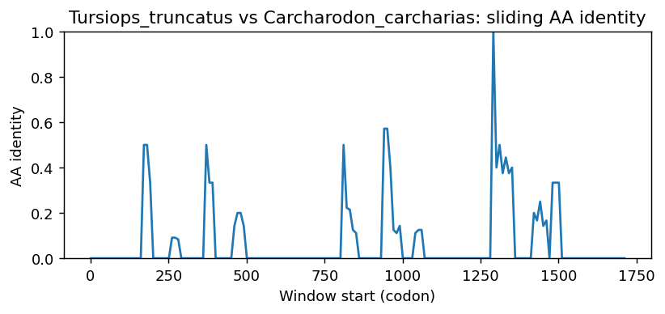
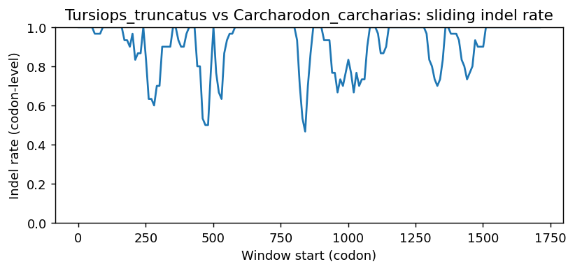
Tursiops_truncatus vs Engraulis_encrasicolus
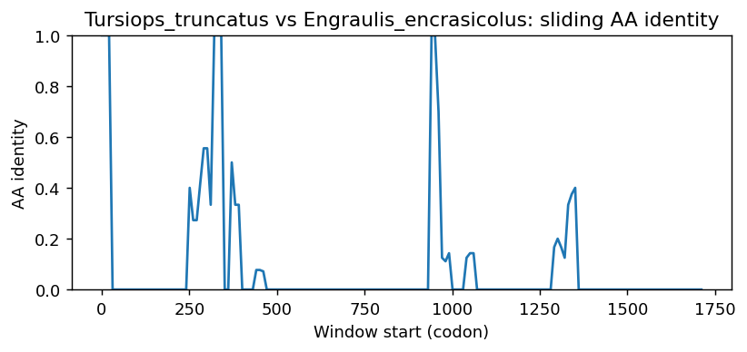
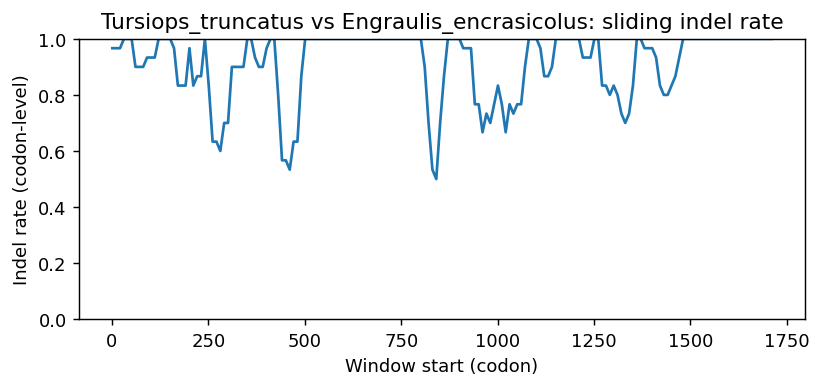
Tursiops_truncatus vs Osmerus_eperlanus
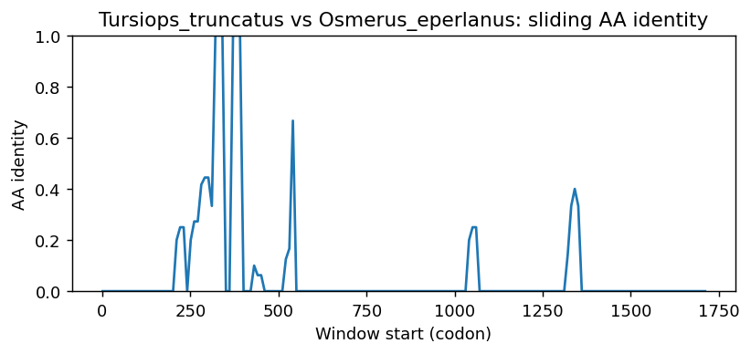
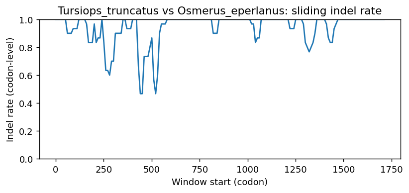
Tursiops_truncatus vs Hypomesus_transpacificus
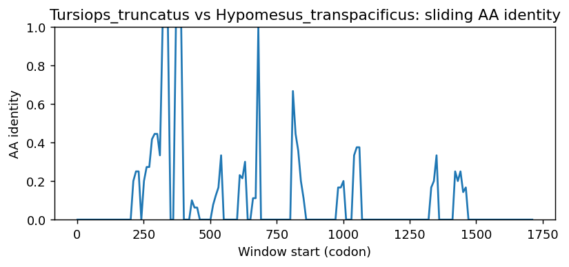
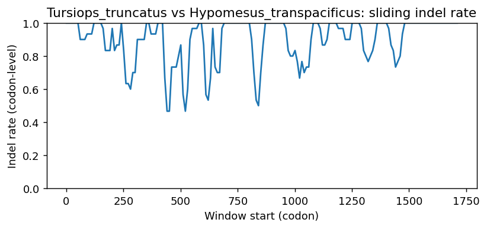
Tursiops_truncatus vs Hoplias_malabaricus
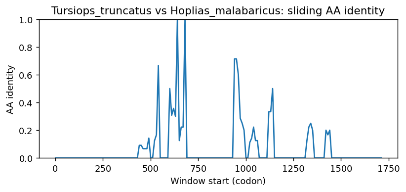
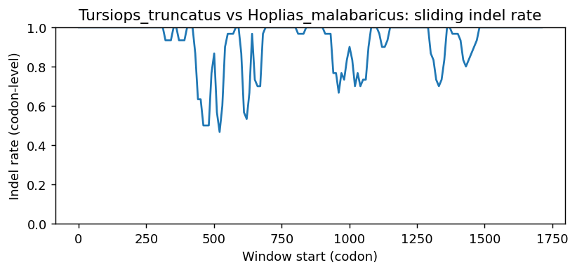
Tursiops_truncatus vs Sardina_pilchardus
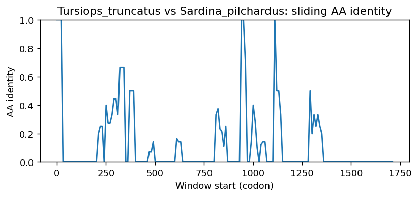
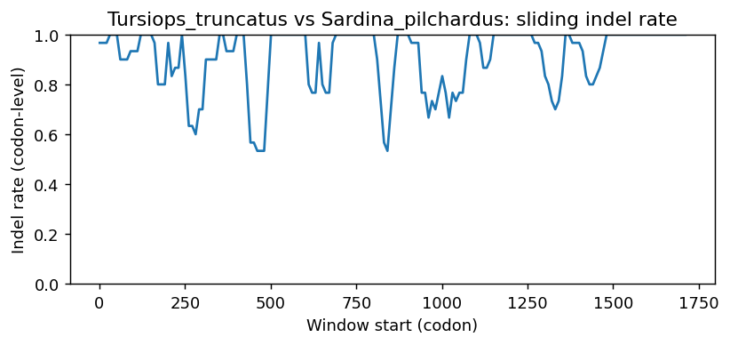
Methods (brief)
- CDS are translated (genetic code 1); proteins aligned by MAFFT when available, otherwise a progressive global aligner (BLOSUM62). Protein MSA is back-translated into a codon MSA.
- Pairwise metrics: AA/NT identities on aligned nongap positions; Ts/Tv; single-hit syn/nonsyn counts; gap events and largest contiguous gap cluster (codons); sliding-window AA identity and codon-level indel rate.
- Per-sequence diagnostics: GC content/skew, CpG density, AA low-complexity fraction via SEG-like entropy windows (win=12, H<2.2), and NT tandem repeats (homopolymers =5; di-nt =4 copies; tri-nt =3 copies).
- Correlations: Pearson/Spearman between AA identity and |GC difference|, mean AA LCR fraction, and mean NT repeat fraction across pairs.
- Risk classifier: combines identity, coverage, longest identical block, low-ID windows, max indel cluster, and up-ranks risk when mean LCR =0.25 or mean repeat =0.10 (soft-masking can remove seeds and reduce sensitivity).
Artifacts: pairwise_metrics.csv, per_sequence_composition.csv, correlations.csv, alignment_protein.faa, alignment_codon.fna.